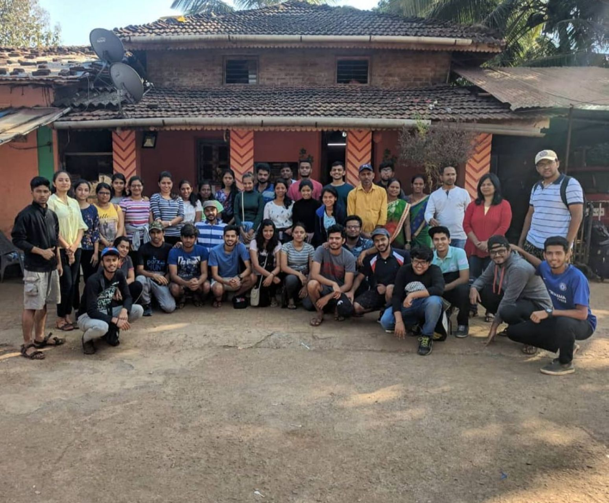

NSS Volunteer

As the Event Manager for the National Service Scheme (NSS), I was responsible for planning and coordinating various social service initiatives, including blood donation drives, community awareness campaigns, beach cleanups, and charity events. I also actively volunteered in these initiatives, which strengthened my leadership skills and deepened my commitment to community service. We also organized a 7 day camp in a rural village to work towards the betterment of the village and kids.